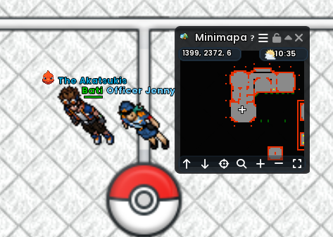
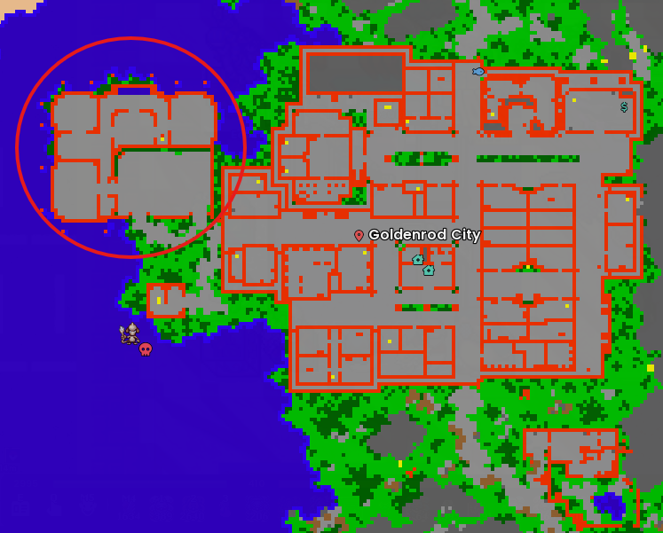

Jenny Quest
Guía para iniciar la quest de Officer Jenny en Goldenrod, cumplir sus requisitos y superar su combate.
Guia para iniciar a quest da Officer Jenny em Goldenrod, cumprir os requisitos e vencer seu combate.
Dónde iniciar
Onde iniciar
La Jenny Quest se inicia hablando con Officer Jenny en el centro policial de Goldenrod. La referencia exacta mostrada en la captura es 1399, 2372, 6.
A Jenny Quest começa falando com a Officer Jenny no centro policial de Goldenrod. A referência exata mostrada na imagem é 1399, 2372, 6.


Requisitos previos
Pré-requisitos
Combate contra Officer Jenny
Combate contra Officer Jenny
Jenny utiliza Arcanine, Houndoom, Growlithe, Manectric, Lucario y Mightyena. Las imágenes de abajo muestran sus ataques de área. Los demás ataques son melee y no se pueden esquivar.
Jenny utiliza Arcanine, Houndoom, Growlithe, Manectric, Lucario e Mightyena. As imagens abaixo mostram seus ataques em área. Os demais ataques são melee e não podem ser esquivados.
Ataques de área
Ataques em área
Usa estas referencias para reconocer el alcance y la forma de los ataques que sí puedes intentar esquivar. Haz clic en una captura para ampliarla.
Use estas referências para reconhecer o alcance e o formato dos ataques que podem ser evitados. Clique em uma imagem para ampliar.
Final y recompensas
Final e recompensas
Después de derrotar a Jenny, habla nuevamente con Officer Jenny para completar la quest y recibir las recompensas.
Depois de derrotar Jenny, fale novamente com a Officer Jenny para concluir a quest e receber as recompensas.